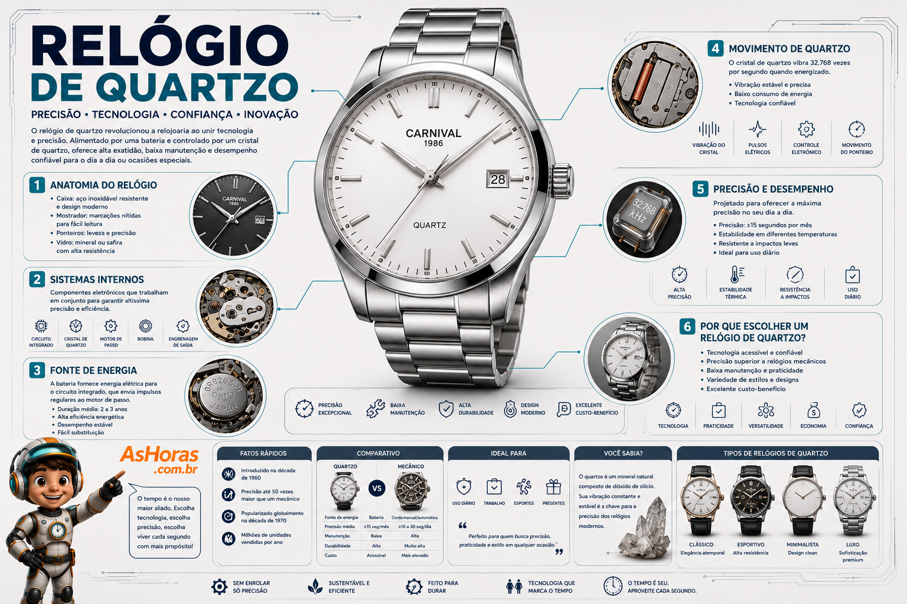

Relógio de Quartzo: o cristal que revolucionou a precisão
Um pequeno cristal que vibra milhares de vezes por segundo é o segredo por trás do relógio mais preciso e acessível já criado — e o responsável por uma das maiores reviravoltas da história da relojoaria.
Como funciona o relógio de quartzo?
Dentro de um relógio de quartzo existe um minúsculo cristal cortado em formato de diapasão. Quando recebe corrente elétrica da bateria, esse cristal vibra exatamente 32.768 vezes por segundo. Um circuito integrado conta essas vibrações e converte esse ritmo constante em pulsos que movem um pequeno motor de passo, girando os ponteiros — ou atualizando o mostrador digital — com uma precisão muito maior do que qualquer engrenagem mecânica.
Tipos de relógio de quartzo
O mesmo movimento por dentro pode vir em estilos bem diferentes por fora, para cada ocasião e público.
Anatomia do movimento de quartzo
Precisão e desempenho
Como escolher um relógio de quartzo
Quartzo vs. Mecânico
Prós e contras
Vantagens
- Extremamente preciso — erra segundos por mês, não por dia
- Bateria dura de 1 a 5 anos sem manutenção
- Muito mais barato de produzir e manter
Desvantagens
- Depende de bateria — para de funcionar quando ela acaba
- Menos valorizado como peça de colecionador
- Mecanismo interno não é "admirável" a olho nu como o mecânico
Quando o Japão lançou o Seiko Astron em 1969 — o primeiro relógio de quartzo de pulso do mundo — a precisão e o baixo custo do quartzo quase quebraram a indústria relojoeira suíça, tradicionalmente mecânica. O episódio ficou conhecido como a "Crise do Quartzo".
Infográfico: o relógio de quartzo por dentro

Linha do tempo do relógio de quartzo
Efeito piezoelétrico
Jacques e Pierre Curie descobrem que o quartzo gera eletricidade quando pressionado — a base científica de toda a tecnologia.
Nasce o Seiko Astron
A Seiko lança o Astron 35SQ, o primeiro relógio de pulso de quartzo do mundo, com precisão cerca de 100 vezes maior que a de um mecânico comum.
Crise do Quartzo
A precisão e o baixo custo do quartzo abalam a indústria suíça tradicional, que via seu número de trabalhadores especializados despencar.
Frequência padrão
O Calibre 350 da Girard-Perregaux consolida os 32.768 Hz como a frequência de oscilação usada até hoje na maioria dos relógios de quartzo.
Virada com a Swatch
Nicolas Hayek funda a Swatch, que usa o próprio quartzo para reerguer a indústria relojoeira suíça com relógios coloridos e acessíveis.
O movimento mais vendido
O quartzo equipa a maioria absoluta dos relógios do mundo, unindo baixo custo, alta precisão e produção em larga escala.
Vida útil da bateria por tipo de energia
Perguntas frequentes
Relógio de quartzo pode ficar sem pilha do nada?
Não do nada: o ponteiro dos segundos costuma "pular" de 2 em 2 quando a pilha está fraca, um aviso para trocá-la logo e evitar vazamento dentro da caixa.
Vale a pena optar por movimento solar em vez de pilha comum?
Sim, é bem prático — você nunca precisa trocar a bateria manualmente, desde que o relógio receba luz com alguma regularidade.
Relógio de quartzo pode ser tão valioso quanto um mecânico?
Sim. Marcas de luxo também produzem quartzo de alta precisão com acabamento premium, mesmo sem o apelo tradicional do movimento mecânico.
Por que alguns relógios de quartzo são caros mesmo sendo "só" quartzo?
O preço reflete design, materiais (caixa, vidro de safira, pulseira) e marca — não apenas o movimento interno, que costuma ser o item mais barato do conjunto.
Referências e leituras complementares
Este conteúdo foi baseado em fontes públicas sobre a história e o funcionamento dos relógios de quartzo. Para se aprofundar, vale a leitura: